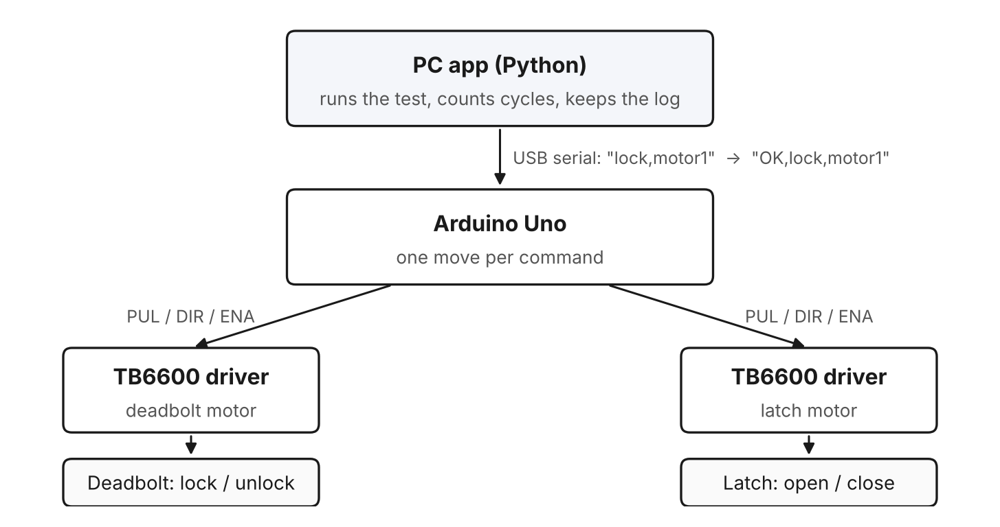
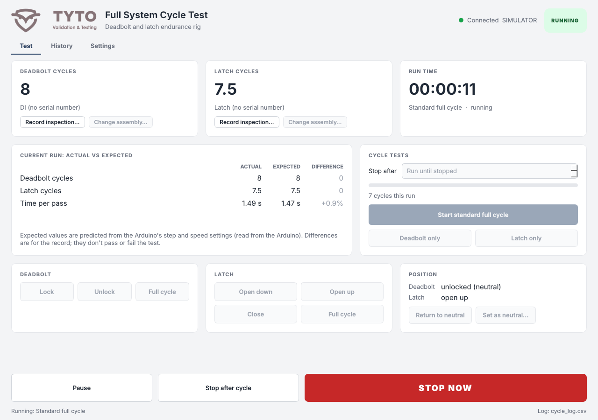

WedgeTLS, 2026 · Rig rebuild, test software, firmware
This is the rig that runs a whole Tyto lock the same way a door gets used: lock, unlock, turn the knob, let it close, over and over for days. I took the original 2023 rig and rebuilt the software and firmware so a multi-day run can never lose its count.

| Hardware | Two NEMA 23 steppers, each on its own TB6600 driver and 12 V supply, one Arduino Uno, the lock mounted in a door frame |
|---|---|
| Software | Python desktop app (PyQt5), Arduino sketch, a built-in firmware uploader, a simulator for testing without the rig |
| Target | 200,000+ cycles per assembly, about three and a half days of running |
TL;DR. Two motors work the deadbolt and the door latch like a person would, for days at a time. The computer decides every move and counts, so a power blip or a reboot never costs a single counted cycle. When a part fails, the app tells you the highest count it's known to have survived.
The latch rig tests either a latch or a deadbolt. This one tests the lock as a full system. A full door stands in a regular house frame built from 20-20 aluminum extrusion. One motor drives the deadbolt, and the other turns the latch like a hand on the knob. A standard cycle is lock, unlock, open the latch, close it. The latch opens down on one pass and up on the next, so both directions get tested and the wear spreads out evenly. There are also deadbolt-only and latch-only modes for testing one part by itself.
Each assembly keeps its own count. You can swap a latch out mid-test, put it back later, and it picks up right where it left off.
The original code kept the cycle count in the Arduino's memory. One reset and the count was gone, which defeats the whole point of a multi-day test. So I flipped it around. The Arduino only knows how to do one move when it's told, and to report when it's done. Everything else lives on the PC, including what to run, the counts and the records.
Every finished move gets one line in a log file, and that log is the single source of truth. When the app starts, it replays the log to rebuild every count. If the app crashes mid-run, the run gets closed out as interrupted and nothing is lost.
A real door gets treated pretty inconsistently, depending on who's using it. Some people ease it shut and some people slam it. So we built this rig to be aggressive and forceful on purpose, and to show the lock takes that beating for the whole test without any issue. Every cycle still follows the standard, with the lock going through the same unlock, open, close and lock that a person does.
The app tracks both motors from a neutral position, with the deadbolt unlocked and the latch closed. Moves have to pair up. You can't lock twice, and the latch has to close before it opens again, so a motor never gets driven past the end of its travel. The app enforces that, and the Arduino checks it again as a backup. The lock gets inspected along the way, and every inspection is recorded as a pass or fail, so the count in the validation report is one we know the lock actually reached.
Every move is timed against how long the motion math says it should take, so a stall or a binding mechanism shows up as a slow move. Early on the rig picked up some stray serial noise. Now, when a reply goes missing, the app asks the Arduino where the motors actually are before calling it a fault. If the move happened, the test keeps going. Real faults stop the run, send a message to chat or email, and wait for a person to look before anything restarts.
There are a few ways to stop it. You can pause, stop after the current cycle, or stop right now, which cuts power to both drivers within one motor step. The rig's mechanical e-stop is still the real safety device.

| Risk | How it's covered |
|---|---|
| Lost count on a reset | Counts live in an append-only log on the PC, rebuilt on every start |
| Motor driven too far | Moves must pair up, checked by the app and again by the Arduino |
| Serial noise | Bad commands are resent once, and lost replies are confirmed with the Arduino |
| App and firmware out of step | The firmware ID is a hash of the sketch, and the app offers to upload the right one |
| Missed steps | Speed ramps up and down on every move. Catching them outright needs a sensor, which is next on the list. |